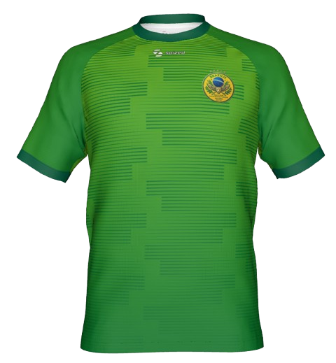

Dres - Canarinho Fan Edition

Detailní popis
Probuďte v sobě pravou fotbalovou radost s dresem Canarinho Fan Edition. Tento dres sází na moderní odstíny zelené barvy doplněné o elegantní horizontální texturu, která symbolizuje dynamiku a rychlost na hřišti. Dominantou celého designu je náš detailně zpracovaný neoficiální znak, který z tohoto kousku dělá unikátní sběratelský předmět k Mistrovství světa 2026. Tento dres na našem e-shopu pouze prodáváme jako prémiový produkt pro fanoušky. Díky vysoce prodyšnému materiálu a pohodlnému střihu je jako stvořený pro celodenní nošení, fandění v zaplněných fanzónách nebo pro rekreační zápasy s přáteli.
Parametry produktu
- Název: Canarinho Fan Edition
- Materiál: 100% Recyklovaný Polyester (AeroDry)
- Gramáž: 145 g/m²
- Dostupné velikosti: S, M, L, XL, XXL
Cena: 1 490 Kč